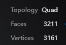

已在Tripo网页生成一个无纹理灰模。P2.0 Smart Mesh免费试用一次，目标3000四边面，界面统计3211面、3161顶点；没有扣减200点余额，试用2→1。只输入正面v2，后方结构由服务推断。
GLB导出出现升级提示，未下载网格文件。当前可在Tripo模型页旋转查看。这里保存真实网页截图和来源，没有本地Blender工程／可导入Godot的角色资产。
后发偏长且发尾偏尖，上衣胸前较贴身，发际有细薄突起；这是需要进一步修整的初稿，不是最终模型。取得可编辑网格后先整理部件、比例、拓扑和UV，再用PixelLab制作像素贴图。来源、使用限制与下一步 · 实际设置与结果记录
